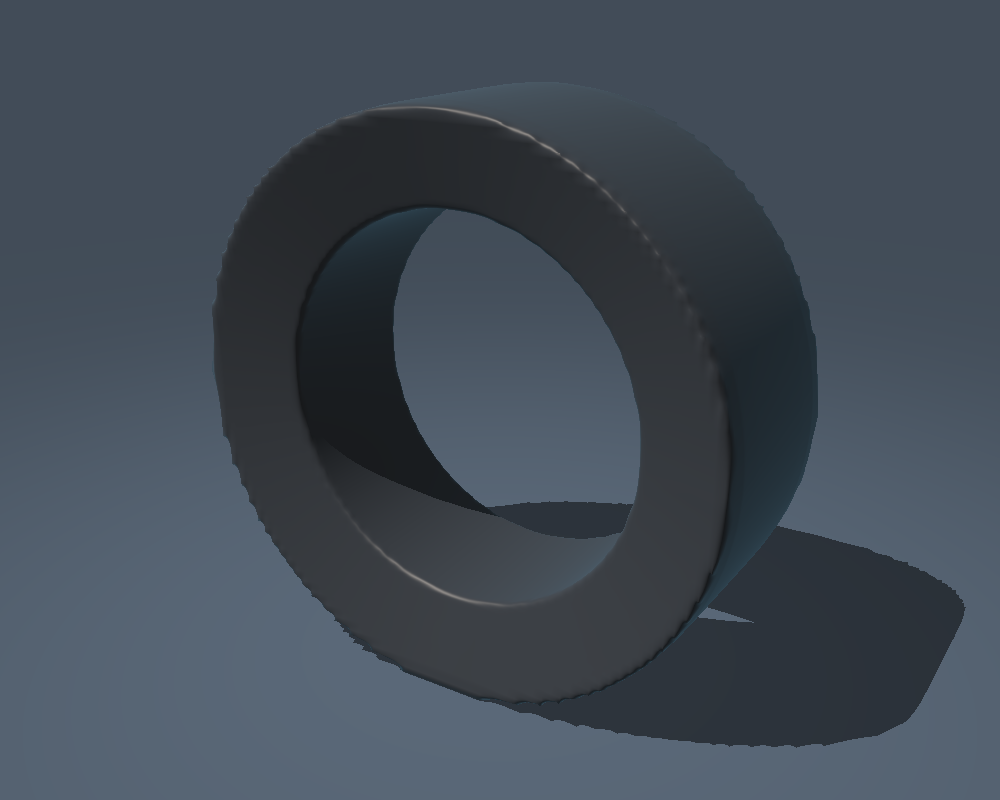

From solved tyre to signed field.
The Drive solver now has a non-rigid geometry handoff to the shared renderer. These images isolate the signed tyre envelope so its deformation and limitations are visible. This is a render gallery, not another browser simulation.

A native rest asset
The project content build emits and verifies DriveTyre.sdf in SDF1 format, with a geometry/grid/algorithm signature. A changed or corrupt bake is rejected by verify-only mode. Validation currently reconstructs the bake; this is not a fast cache-hit path.
One completed solver snapshot
The optional C geometry extension projects actual XPBD node displacements. Tread and sidewalls deform; rim materials remain rigid. The host forks shared topology and publishes vertices, normals, culling and traversal together. Stop restores the authored vertices exactly.
Keep the native lighting path
The host rebuilds its native distance geometry from the changed scene and invalidates lighting history. ReSTIR remains in place. Production visibility is still hybrid SDF plus triangle refinement; the pure-field images here are separate CPU diagnostics. The local rest asset is not yet a streamed GPU object-field cache.
Accuracy, including the misses.
Each fixture uses 1,728 camera rays over three views. Independent triangle intersections are compared with field-only marching. Errors below are measured on paired hits; a low median does not excuse missing a surface.
| Snapshot | Triangle hits | Missed / extra | Median error | 95th percentile | Worst paired error |
|---|---|---|---|---|---|
| Rest | 602 | 12 / 0 | 0.331 mm | 1.628 mm | 631.7 mm |
| Loaded | 604 | 15 / 0 | 0.341 mm | 1.598 mm | 103.1 mm |
| Banked | 598 | 12 / 0 | 0.339 mm | 1.439 mm | 103.2 mm |
A local 64³ CPU reconstruction takes about 1.0–1.2 seconds in this execution. The current host publication synchronizes and rebuilds the scene, rather than streaming dirty tyre bricks. The native Vulkan presentation path was syntax-checked but was not executed for these pictures. GPU update optimization and target-hardware profiling remain next steps.
The signed solid is the outer lighting envelope with an inner barrel closure and an open axle hole. It is not resolved rubber-wall thickness or an internal air cavity. Sharp bead tips and grazing rays remain problematic at this resolution; some rays hit a later surface. Sphere-tracing relaxation is heuristic, not a certified distance bound. Self-intersecting or tearing meshes are outside this implementation's validated scope.
The two loaded fixtures use actual XPBD evolution for 1.5 seconds with a hub prescribed 70 mm below the unloaded radius. The banked ground has normal proportional to (0, 0.30, 1). These are controlled deformation tests, not claimed vehicle load-equilibrium measurements. Native +Z is up. The rim is intentionally absent from field-only views.